为神经网络选择正确的激活函数
Contents
转载自https://mp.weixin.qq.com/s/5w43oMo0m8NWEivDf_FcJg
前言
我们都知道神经网络模型中使用激活函数的主要目的是将非线性特性引入到我们的网络中，强化网络的学习能力。激活函数应用于隐藏层和输出层中每个节点的称为 z 的输入加权和（此处输入可以是原始数据或前一层的输出）。
在本篇文章中我们将讨论神经网络中常见的激活函数，并使用可视化技术帮助你了解激活函数的函数定义和不同的使用场景。
在看完本文章后，你可以将清楚地了解何时使用哪种激活函数，并了解不同激活函数的定义。
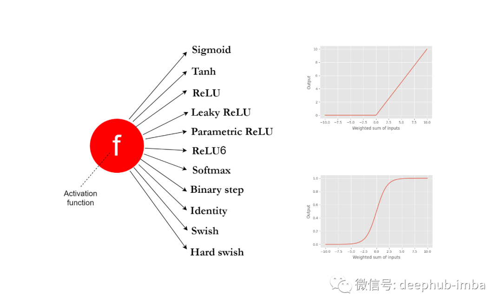
神经网络中不同层的激活函数
神经网络通常由三种类型的层组成：输入层、隐藏层和输出层。
输入层只保存输入数据，不执行任何计算。因此不需要使用激活函数。
在神经网络的隐藏层中需要使用非线性激活函数， 这是因为需要在网络中引入非线性来学习复杂的模式。如果没有非线性激活函数，具有许多隐藏层的神经网络将成为一个巨大的线性回归模型，这对于从现实世界数据中学习复杂模式毫无用处。根据我们在隐藏层中使用的激活函数的类型，神经网络模型的性能会有很大差异。
在神经网络的输出层内使用激活函数的选择取决于我们要解决的问题类型。
线性与非线性函数
大多数激活函数是非线性的。但是有时也在神经网络中使用线性激活函数，例如在解决回归问题的神经网络模型的输出层中使用线性激活函数。
一个线性函数（称为 f）接受输入 z 并返回输出 cz，它是输入乘以常数 c。在数学上，这可以表示为 f(z) = cz。当 c=1 时，函数按原样返回输入，并且不对输入进行任何更改。二维空间中线性函数的图形是一条直线。
任何不是线性的函数都可以归类为非线性函数。非线性函数的图形不是一条直线。它可以是一个复杂的模式，也可以是两个或多个线性组件的组合。
不同类型的激活函数
下面将讨论神经网络中常用的激活函数。
Sigmoid
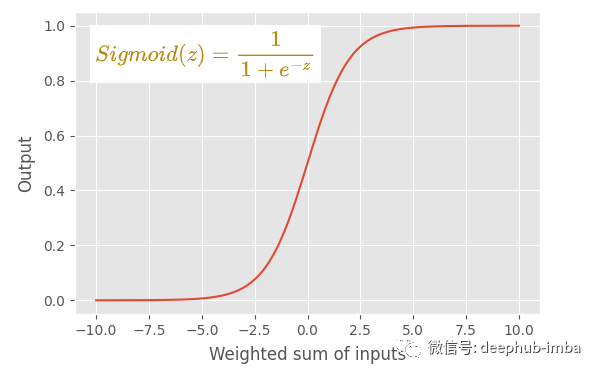
主要特点：
- 也是逻辑回归模型中使用的逻辑函数。
- sigmoid 函数是一个 s 形图。
- 这是一个非线性函数。
- sigmoid 函数将其输入转换为 0 到 1 之间的概率值。
- 它将大的负值转换为 0，将大的正值转换为 1。
- 对于输入 0，它返回 0.5。所以 0.5 被称为阈值，它可以决定给定的输入属于什么类型的两个类。
用法：
- 早期，Sigmoid 函数被用作 MLP、CNN 和 RNN 中隐藏层的激活函数。
- 现在，sigmoid 函数仍在 RNN 中使用。
- 我们通常不将 sigmoid 函数用于 MLP 和 CNN 中的隐藏层，因为太慢了，我们在那里使用 ReLU 或 Leaky ReLU。
- 当我们构建二进制分类器时，输出层必须使用 sigmoid 函数，其中输出被解释为类标签，具体取决于函数返回的输入的概率值。
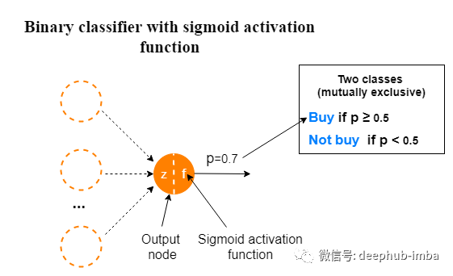
当我们使用 sigmoid 函数建立一个多标签分类模型时，其中每个相互包含的类都有两个结果。不要将此与多类分类模型混淆。
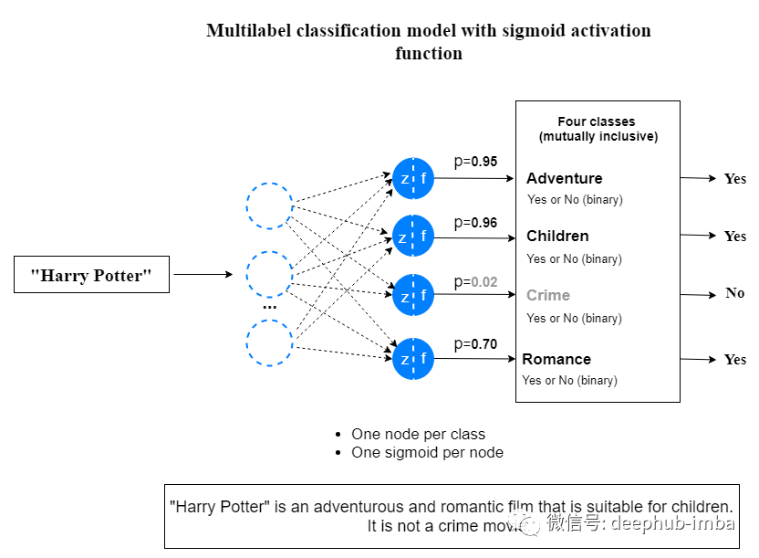
由于以下缺点，我们通常不在隐藏层中使用 sigmoid 函数。
- sigmoid 函数存在梯度消失问题。这也称为梯度饱和。
- sigmoid 函数收敛慢。
- 它的输出不是以零为中心的。因此，它使优化过程更加困难。
- 由于包含了 e^z 项，因此该函数的计算成本很高。
Tanh
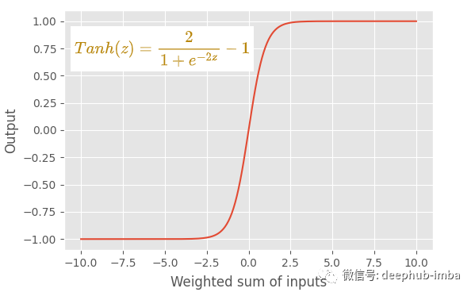
主要特点：
- tanh（正切双曲线）函数的输出始终介于 -1 和 +1 之间。
- 像 sigmoid 函数一样，它有一个 s 形图。这也是一个非线性函数。
- 与 sigmoid 函数相比，使用 tanh 函数的一个优点是 tanh 函数以零为中心。这使得优化过程更加容易。
- tanh 函数的梯度比 sigmoid 函数的梯度更陡。
用法：
- 目前tanh 函数还被用作 MLP、CNN 和 RNN 中隐藏层的激活函数。
- tanh 函数也在 RNN 中使用。
- 我们通常不将 tanh 函数用于 MLP 和 CNN 中的隐藏层。
- 我们从不在输出层使用 tanh 函数。
由于以下缺点，我们通常不在隐藏层中使用 tanh 函数。
- tanh 函数存在梯度消失问题。
- 由于包含了 e^z 项，因此该函数的计算成本很高。
RELU
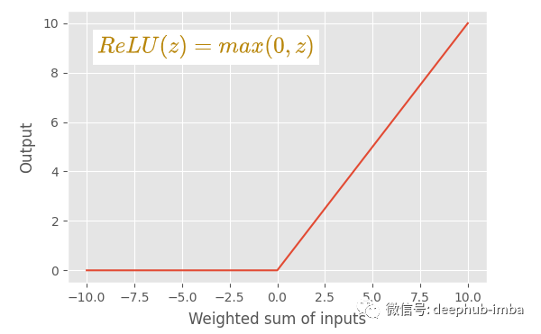
主要特点：
- ReLU（整流线性单元）激活函数是 sigmoid 和 tanh 激活函数的绝佳替代品。
- ReLU 发明是深度学习领域最重要的突破之一。
- 不存在梯度消失问题。
- 计算成本很低。认为 ReLU 的收敛速度比 sigmoid 和 tanh 函数快 6 倍。
- 如果输入值为 0 或大于 0，则 ReLU 函数按原样输出输入。如果输入小于 0，则 ReLU 函数输出值 0。
- ReLU 函数由两个线性分量组成。因此，ReLU 函数是一个分段线性函数。所以ReLU 函数是一个非线性函数。
- ReLU 函数的输出范围可以从 0 到正无穷大。
- 收敛速度比 sigmoid 和 tanh 函数快。这是因为 ReLU 函数对一个线性分量具有固定导数（斜率），而对另一个线性分量具有零导数。因此，使用 ReLU 函数的学习过程要快得多。
- 使用 ReLU 可以更快地执行计算，因为函数中不包含指数项。
用法：
- ReLU 函数是MLP 和 CNN 神经网络模型中隐藏层的默认激活函数。
- 我们通常不会在 RNN 模型的隐藏层中使用 ReLU 函数。相反，我们在那里使用 sigmoid 或 tanh 函数。
- 我们从不在输出层使用 ReLU 函数。
缺点：
- 使用 ReLU 函数的主要缺点是它有一个dying ReLU问题。（当梯度值过大时，权重更新后为负数，经relu后变为0，导致后面也不再更新）
Leaky ReLU
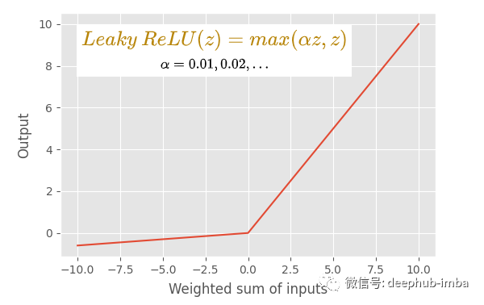
主要特点：
- leaky ReLU 激活函数是默认 ReLU 函数的修改版本。
- 与 ReLU 激活函数一样，该函数不存在梯度消失问题。
- 如果输入值是 0 大于 0，leaky ReLU 函数会像默认的 ReLU 函数一样输出输入。但是如果输入小于 0，leaky ReLU 函数会输出一个由 αz 定义的小负值（其中 α 是一个小的常数值，通常为 0.01，z 是输入值）。
- 它没有任何具有零导数（斜率）的线性分量。因此它可以避免dying ReLU 问题。
- 使用leaky ReLU 的学习过程比默认的 ReLU 更快。
用法：
- ReLU 函数的相同用法也适用于leaky ReLU 函数。
参数 ReLU (PReLU) 激活函数
主要特点：
- 这是 ReLU 函数的另一个变体。
- 这几乎类似于leaky ReLU 函数。唯一的区别是值 α 成为可学习的参数（因此得名）。我们将 α 设置为网络中每个神经元的参数。因此，α的最优值从网络中学习。
Relu6
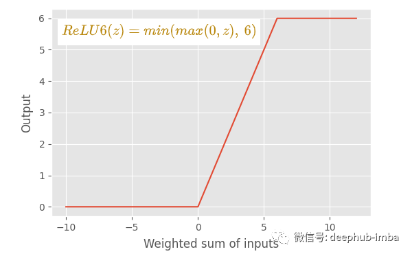
主要特点：
- ReLU 和 ReLU6 之间的主要区别在于，ReLU 允许正侧的值非常高，而 ReLU6 限制为正侧的值 6。任何 6 或大于 6 的输入值都将被限制为值 6（因此得名）。
- ReLU6 函数由三个线性分量组成。它是一个非线性函数。
SoftMax
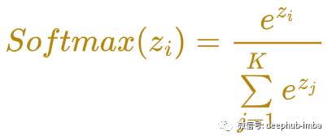
主要特点：
- 这也是一个非线性激活函数。
- softmax 函数计算一个事件（类）在 K 个不同事件（类）上的概率值。它计算每个类别的概率值。所有概率的总和为 1，这意味着所有事件（类）都是互斥的。
用法：
- 必须在多类分类问题的输出层使用 softmax 函数。
- 不在隐藏层中使用 softmax 函数。
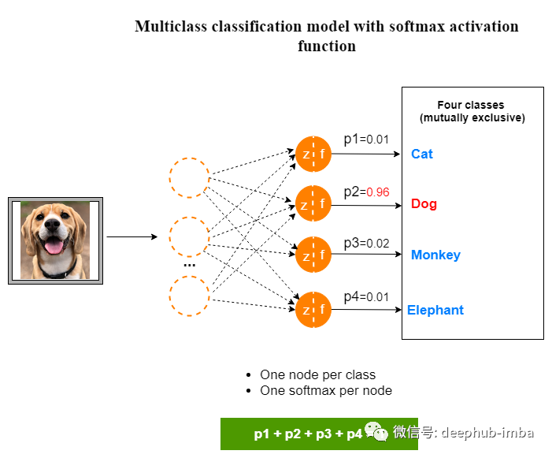
二元阶梯激活函数
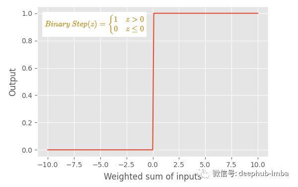
主要特点：
- 该函数也称为阈值激活函数。我们可以将任何值设置为阈值，在这里我们指定值 0。
- 如果输入大于阈值，此函数输出值 1。如果输入等于或小于阈值，此函数输出值 0。
- 这函数输出一个二进制值，0 或 1。
- 函数由两个线性分量组成。因此该函数是分段线性函数。所以二元阶跃函数是非线性函数，并且不是平滑函数。
用法：
- 通常不会在现代神经网络模型中使用这个函数。
- 但是可以使用这个函数来解释诸如“激发神经元”、“感知器的内部工作”等理论概念。因此，阶跃函数在理论上很重要。
恒等激活函数
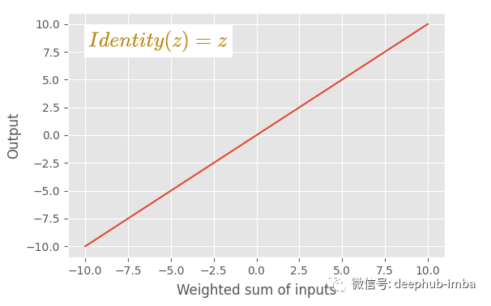
主要特点:
- 这也被称为线性激活函数。
- 当我们讨论激活函数时，这是唯一一个被认为是线性函数的函数。
- 这个函数按原样输出输入值。对输入不做任何更改。
用法:
- 该函数仅用于解决回归问题的神经网络模型的输出层。
- 不要在隐藏层中使用这个函数。
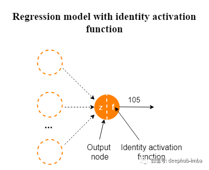
Swish
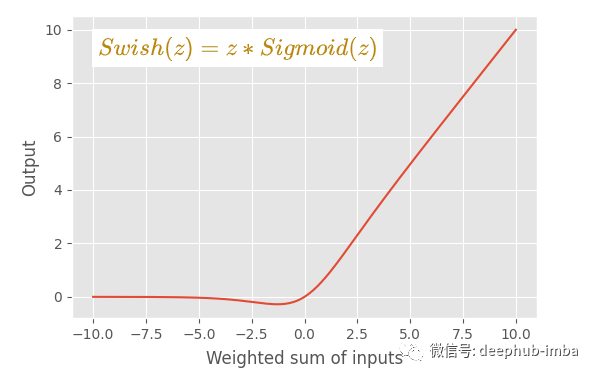
主要特点：
- 该函数是通过将 sigmoid 函数乘以输入 z 构成的。
- 这是一个非线性函数。
- 该图与 ReLU 激活函数的图非常相似。
- 曲线比 ReLU 激活函数更平滑。在训练模型时，这种平滑度很重要。该函数在训练时很容易收敛。
用法：
- 仅在隐藏层中使用。
- 不在神经网络模型的输出层使用这个函数。
缺点：
- Swish 函数的主要缺点是计算量很大，因为函数中包含了 e^z 项。这可以通过使用下面定义的称为“Hard Swish”的特殊函数来避免。
H-Swish
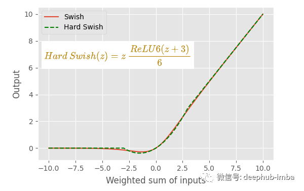
主要特点：
- 与 Swish 函数的曲线基本相同。这在计算上很便宜，因为 sigmoid 函数被线性模拟取代。
用法：
- H-Swish的用法类似于 Swish 激活函数的用法。
最后总结
激活函数只是数学函数。激活函数应该具有的主要特征是该函数是可微的，因为这是模型中反向传播的要求。
选择正确的激活函数可以被认为是一种超参数调整，通过理解问题定义并考虑模型的性能和损失函数的收敛性来手动选择激活函数。这里总结了上面讨论的不同激活函数的使用场景。当训练神经网络模型时，可以作为参考：
- 神经网络的输入层节点不需要激活函数，在定义输入层时无需担心激活函数。
- 输出层激活函数取决于我们要解决的问题类型。在回归问题中，我们使用线性（恒等）激活函数。在二元分类器中，我们使用 sigmoid 激活函数。在多类分类问题中，我们使用 softmax 激活函数。在多标签分类问题中，我们使用 sigmoid 激活函数，为每个类输出一个概率值。
- 隐藏层中使用非线性激活函数，通过考虑模型的性能或损失函数的收敛性来做出选择。可以从 ReLU 激活函数开始，如果你有一个Dying ReLU 问题，试试leaky ReLU。
- 在 MLP 和 CNN 神经网络模型中，ReLU 是隐藏层的默认激活函数。
- 在 RNN 神经网络模型中，我们对隐藏层使用 sigmoid 或 tanh 函数。tanh 函数具有更好的性能。
- 只有恒等激活函数被认为是线性的。所有其他激活函数都是非线性的。
- 不要在隐藏层中使用 softmax 和恒等函数，在隐藏层中使用 tanh、ReLU、ReLU 的变体、swish 和 hard swish 函数。hard swish是最新的研究结果，可以试试
Author nanshusu
LastMod 2021-09-07